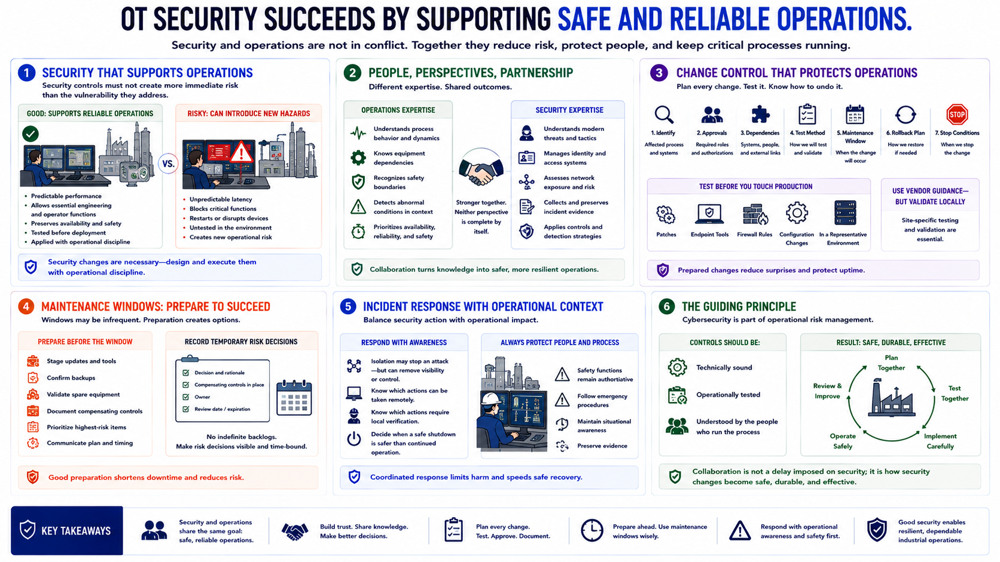

Safety, Reliability, and Operations
Connecting to LMS... Progress: in progress

Narration
OT security succeeds when it supports safe and reliable operations. A control that creates unpredictable latency, blocks an essential engineering function, or restarts a critical device can introduce more immediate risk than the vulnerability it was intended to address. That does not mean avoiding security changes. It means designing and executing them with operational discipline.
Security teams need engineers and operators because those roles understand process behavior, equipment dependencies, safety boundaries, and abnormal conditions. Engineers need security teams because modern threats, identity systems, network exposure, and incident evidence extend beyond traditional control engineering. Neither perspective is complete by itself.
Before a change, identify the affected process, required approvals, dependencies, test method, maintenance window, rollback plan, and conditions that would stop the work. Test patches, endpoint tools, firewall rules, and configuration changes in a representative environment when possible. Vendor guidance is useful, but it does not replace site-specific validation.
Maintenance windows may be infrequent, so preparation matters. Teams can stage updates, confirm backups, validate spare equipment, document compensating controls, and prioritize the changes that produce the greatest risk reduction. Temporary risk decisions should be recorded with owners and review dates rather than disappearing into an indefinite backlog.
Incident response also requires operational coordination. Isolating a system may remove an attack path but also remove operator visibility or control. Responders should know which actions can be taken remotely, which require local verification, and when a safe shutdown is preferable to continued operation. Safety functions and emergency procedures remain authoritative.
The guiding principle is that cybersecurity is part of operational risk management. Controls should be technically sound, operationally tested, and understood by the people who run the process. Collaboration is not a delay imposed on security; it is how security changes become safe, durable, and effective.